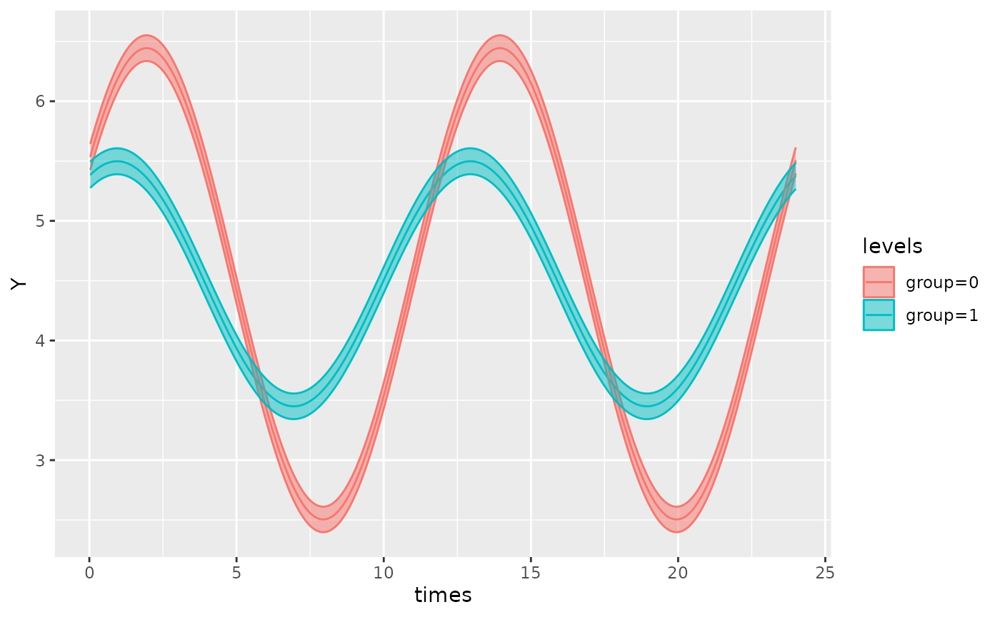
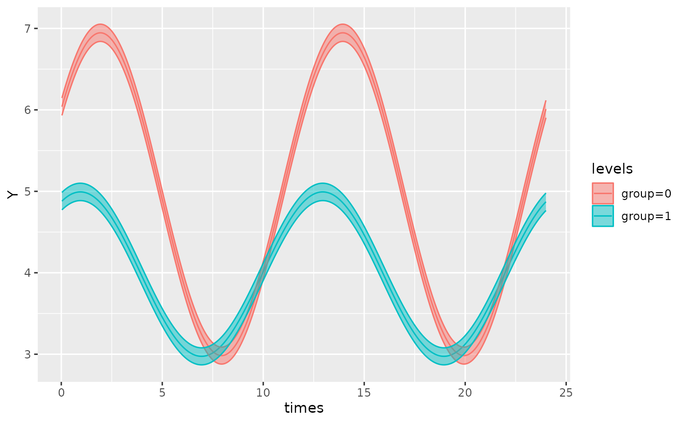
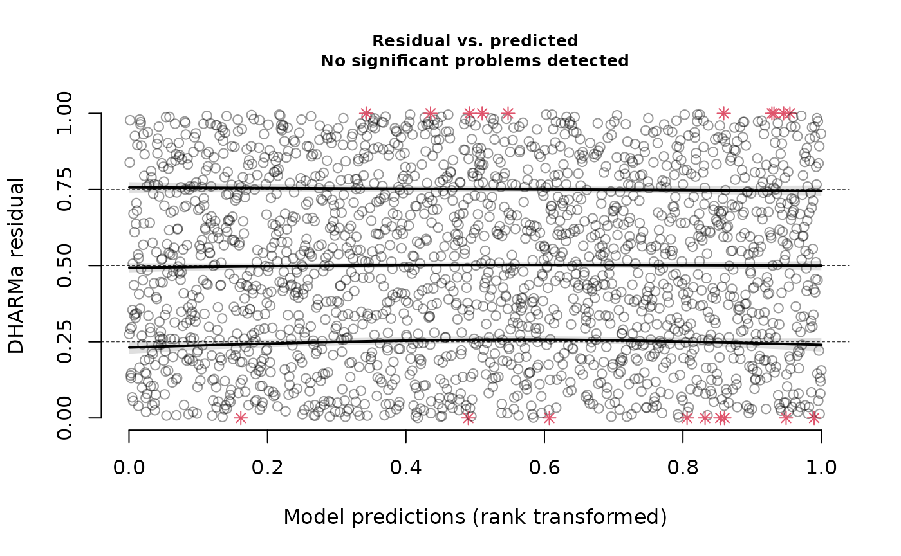
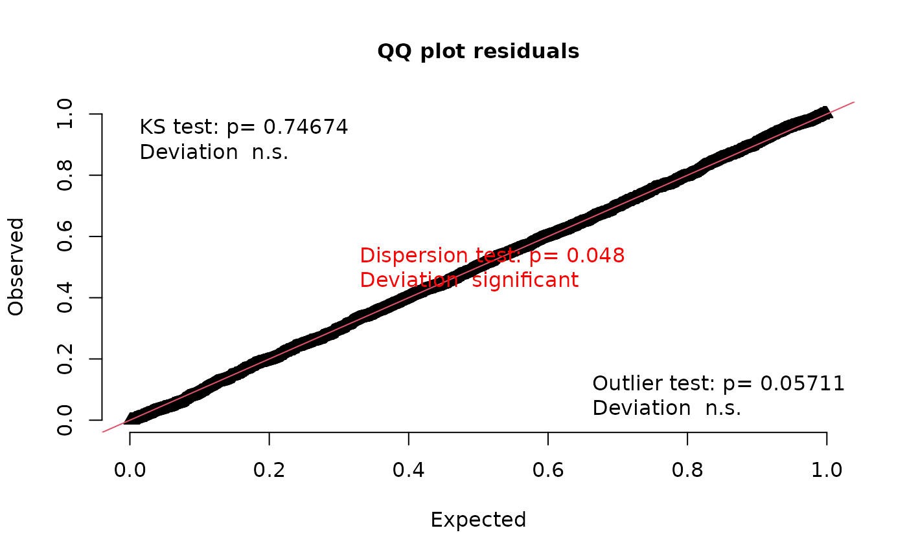

model-specification
Oliver Jayasinghe and Rex Parsons
Source:vignettes/model-specification.Rmd
model-specification.Rmd
library(GLMMcosinor)
library(dplyr)
#>
#> Attaching package: 'dplyr'
#> The following objects are masked from 'package:stats':
#>
#> filter, lag
#> The following objects are masked from 'package:base':
#>
#> intersect, setdiff, setequal, union
cglmm()
cglmm() wrangles the data appropriately to fit the
cosinor model given the formula specified by the user. It provides
estimates of amplitude, acrophase, and MESOR (Midline Statistic Of
Rhythm).
The formula argument for cglmm() is specified using the
lme4 style (for details see
vignette("lmer", package = "lme4")). The only difference is
that it allows for use of an amp_acro() call within the
formula that is used to identify the circadian components and relevant
variables in the data.frame. Any other combination of
covariates can also be included in the formula as well as random effects
and zero-inflation (ziformula) and dispersion
(dispformula) formulae. For detailed examples of how to
specify models, see the mixed-models,
model-specification
and multiple-components
vignettes.
Using cglmm()
The following examples use data simulated by the the
simulate_cosinor function.
Specifying a single-component model with no grouping variable
Here, we fit a simple cosinor model to “testdata_simple” - simulated data from a Poisson distribution loaded in this vignette. In this example, there is no grouping variable.
testdata_simple <- simulate_cosinor(
1000,
n_period = 2,
mesor = 5,
amp = 2,
acro = 1,
beta.mesor = 4,
beta.amp = 1,
beta.acro = 0.5,
family = "poisson",
period = c(12),
n_components = 1,
beta.group = TRUE
)
object <- cglmm(
Y ~ amp_acro(times,
period = 12
),
data = filter(testdata_simple, group == 0),
family = poisson()
)
object
#>
#> Conditional Model
#>
#> Raw formula:
#> Y ~ main_rrr1 + main_sss1
#>
#> Raw Coefficients:
#> Estimate
#> (Intercept) 4.99845
#> main_rrr1 1.08228
#> main_sss1 1.68235
#>
#> Transformed Coefficients:
#> Estimate
#> (Intercept) 4.99845
#> amp 2.00041
#> acr 0.99913The output shows the estimates for the raw coefficients in addition
to the transformed estimates for amplitude (amp) and acrophase (acr) and
MESOR ((Intercept)). The previous section of this vignette:
An
overview of the statistical methods used for parameter estimation
outlines the difference between the raw coefficients and the transformed
coefficients.
We would interpret the output as follows:
MESOR estimate = 4.99845Amplitude estimate = 1.08228Acrophase estimate = 0.99913
Note that this estimate is in radians to align with conventions. To
interpret this, we can express 0.99913 radians as a
fraction of the total \(2\pi\) and
multiply by the period to get the time when the response is a maximal.
Hence, \(\frac{0.99913}{2\pi} \times 12 =
1.908\) in the units of the time_col column in the
original dataframe. This is saying that the peak response would occur
after 1.908 time-units and every 12 time-units after this. We can
confirm this by plotting:
autoplot(object, superimpose.data = TRUE)
Specifying a single-component model with a grouping variable and a shared MESOR
Now, we can add a grouping variable by adding the name of the group
in the amp_acro() function:
testdata_simple_gaussian <- simulate_cosinor(
1000,
n_period = 2,
mesor = 5,
amp = 2,
acro = 1,
beta.mesor = 4,
beta.amp = 1,
beta.acro = 0.5,
family = "gaussian",
period = c(12),
n_components = 1,
beta.group = TRUE
)
object <- cglmm(
Y ~ amp_acro(times,
period = 12,
group = "group"
),
data = testdata_simple_gaussian,
family = gaussian
)
object
#>
#> Conditional Model
#>
#> Raw formula:
#> Y ~ group:main_rrr1 + group:main_sss1
#>
#> Raw Coefficients:
#> Estimate
#> (Intercept) 4.47411
#> group0:main_rrr1 1.03269
#> group1:main_rrr1 0.90210
#> group0:main_sss1 1.67745
#> group1:main_sss1 0.48497
#>
#> Transformed Coefficients:
#> Estimate
#> (Intercept) 4.47411
#> [group=0]:amp 1.96985
#> [group=1]:amp 1.02419
#> [group=0]:acr 1.01896
#> [group=1]:acr 0.49327In the example above, the amplitude and phase are being estimated separately for the two groups but the intercept term is shared. This represents a shared estimate of the MESOR for both groups and is useful if two groups are known to have a common baseline (or equilibrium point). Hence, we would interpret the transformed coefficients as follows:
The MESOR estimate is 4.47411 for both
group = 0andgroup = 1.The estimates for amplitude and acrophase are with reference to the a MESOR estimate of 4.47411
autoplot(object)
However, the groups in this dataset were simulated with two different
MESORs, and so it would be more appropriate to specify an intercept term
in the formula, as this will estimate the MESOR for both
group = 0 and group = 1:
Specifying a single-component model with a grouping variable and an intercept (MESOR)
Similarly to a normal regression model with lme4 or glmmTMB, we can add a term for the group in the model so that we can estimate the difference in MESOR between the two groups.
object <- cglmm(
Y ~ group + amp_acro(times,
period = 12,
group = "group"
),
data = testdata_simple_gaussian,
family = gaussian()
)
object
#>
#> Conditional Model
#>
#> Raw formula:
#> Y ~ group + group:main_rrr1 + group:main_sss1
#>
#> Raw Coefficients:
#> Estimate
#> (Intercept) 4.96476
#> group1 -0.98129
#> group0:main_rrr1 1.04667
#> group1:main_rrr1 0.88812
#> group0:main_sss1 1.68266
#> group1:main_sss1 0.47976
#>
#> Transformed Coefficients:
#> Estimate
#> (Intercept) 4.96476
#> [group=1] -0.98129
#> [group=0]:amp 1.98163
#> [group=1]:amp 1.00942
#> [group=0]:acr 1.01433
#> [group=1]:acr 0.49529This is the same dataset used in the previous example, but note the following differences:
The MESOR estimate for the reference group (
group = 0) is given by(Intercept) = 4.96476The estimate for the difference between the MESOR of the reference group (
group = 0) and the treatment group (group = 1) is given by[group=1] = -0.98129. As such, the estimate for the MESOR ofgroup = 1is3.98347.The estimates for amplitude and acrophase are slightly different to the previous example because there is no longer a shared MESOR.
Plotting this model and comparing to the previous model which used the same dataset, one can appreciate the importance of specifying the formula correctly in order to gain the most accurate model.
autoplot(object)
We may also be interested in estimating the MESOR for the two groups
separately, rather than the difference between groups. To achieve this,
we can remove the intercept term by using 0 +.
cglmm(
Y ~ 0 + group + amp_acro(times,
period = 12,
group = "group"
),
data = testdata_simple,
family = poisson()
)
#>
#> Conditional Model
#>
#> Raw formula:
#> Y ~ group + group:main_rrr1 + group:main_sss1 - 1
#>
#> Raw Coefficients:
#> Estimate
#> group0 4.99845
#> group1 3.99631
#> group0:main_rrr1 1.08228
#> group1:main_rrr1 0.87665
#> group0:main_sss1 1.68235
#> group1:main_sss1 0.48195
#>
#> Transformed Coefficients:
#> Estimate
#> [group=0] 4.99845
#> [group=1] 3.99631
#> [group=0]:amp 2.00041
#> [group=1]:amp 1.00040
#> [group=0]:acr 0.99913
#> [group=1]:acr 0.50266Specifying more complicated models using the amp_acro()
function
The amp_acro() function controls the cosinor components
of model (specifically, this affects just the fixed-effects part). It
provides the user with the ability to specify grouping structures, the
period of the rhythm, and the number of components. There are several
arguments that the user must specify:
groupis the name of the grouping variable in the dataset. This can be a string or an objecttime_colis the name of the time column in the dataset. This can be a string or an objectn_componentsis the number of components.
If the user wishes to fit a multicomponent cosinor model, they can
specify the number of components using the n_components
variable. The value of n_components will need to match the
length of the group and period arguments as
these will be combined for each component.
For example:
testdata_two_components <- simulate_cosinor(
1000,
n_period = 10,
mesor = 7,
amp = c(0.1, 0.4),
acro = c(1, 1.5),
beta.mesor = 4.4,
beta.amp = c(2, 1),
beta.acro = c(1, -1.5),
family = "poisson",
period = c(12, 6),
n_components = 2,
beta.group = TRUE
)
cglmm(
Y ~ group + amp_acro(
time_col = times,
n_components = 2,
period = c(12, 6),
group = c("group", "group")
),
data = testdata_two_components,
family = poisson()
)
#>
#> Conditional Model
#>
#> Raw formula:
#> Y ~ group + group:main_rrr1 + group:main_sss1 + group:main_rrr2 + group:main_sss2
#>
#> Raw Coefficients:
#> Estimate
#> (Intercept) 7.00043
#> group1 -2.60739
#> group0:main_rrr1 0.05665
#> group1:main_rrr1 1.08270
#> group0:main_sss1 0.08378
#> group1:main_sss1 1.68926
#> group0:main_rrr2 0.02884
#> group1:main_rrr2 0.07367
#> group0:main_sss2 0.39671
#> group1:main_sss2 -0.99891
#>
#> Transformed Coefficients:
#> Estimate
#> (Intercept) 7.00043
#> [group=1] -2.60739
#> [group=0]:amp1 0.10113
#> [group=1]:amp1 2.00645
#> [group=0]:amp2 0.39776
#> [group=1]:amp2 1.00162
#> [group=0]:acr1 0.97624
#> [group=1]:acr1 1.00082
#> [group=0]:acr2 1.49824
#> [group=1]:acr2 -1.49717In the output, the suffix on the estimates for amplitude and acrophase represents its component:
[group=0]:amp1 = 0.10113represents the estimate for amplitude ofgroup 0for the first component[group=1]:amp1 = 2.00645represents the estimate for amplitude ofgroup 1for the first component[group=0]:amp2 = 0.39776represents the estimate for amplitude ofgroup 0for the second component[group=1]:amp2 = 1.00162represents the estimate for amplitude ofgroup 1for the second componentSimilarly for acrophase estimates
If a multicomponent model has one component that is grouped with
other components that aren’t, the vector input for group
must still be the same length as n_components but have the
non-grouped components represented as group = NA.
For example, if we wanted only the first component to have a grouped
component, we would specify the group argument as
group = c("group", NA)).
For a detailed explanation of how to specify multi-component models, see multiple-components
Dispersion and zero-inflation model specification
The cglmm() function allows users to specify formulas
for dispersion and zero-inflation models. These formulas are independent
of the main formula specification:
testdata_disp_zi <- simulate_cosinor(1000,
n_period = 6,
mesor = 7,
amp = c(0.1, 0.4, 0.5),
acro = c(1, 1.5, 0.1),
beta.mesor = 4.4,
beta.amp = c(2, 1, 0.4),
beta.acro = c(1, -1.5, -1),
family = "gaussian",
period = c(12, 6, 8),
n_components = 3
)
object_disp_zi <- cglmm(
Y ~ group + amp_acro(times,
n_components = 3,
period = c(12, 6, 8),
group = "group"
),
data = testdata_disp_zi, family = gaussian(),
dispformula = ~ group + amp_acro(times,
n_components = 2,
group = "group",
period = c(12, 6)
),
ziformula = ~ group + amp_acro(times,
n_components = 3,
group = "group",
period = c(7, 8, 2)
)
)
object_disp_zi
#>
#> Conditional Model
#>
#> Raw formula:
#> Y ~ group + group:main_rrr1 + group:main_sss1 + group:main_rrr2 + group:main_sss2 + group:main_rrr3 + group:main_sss3
#>
#> Raw Coefficients:
#> Estimate
#> (Intercept) 7.02587
#> group1 -2.62720
#> group0:main_rrr1 0.03414
#> group1:main_rrr1 1.05510
#> group0:main_sss1 0.12120
#> group1:main_sss1 1.69936
#> group0:main_rrr2 0.01484
#> group1:main_rrr2 0.06812
#> group0:main_sss2 0.39441
#> group1:main_sss2 -1.02813
#> group0:main_rrr3 0.49537
#> group1:main_rrr3 0.21086
#> group0:main_sss3 0.08877
#> group1:main_sss3 -0.38871
#>
#> Transformed Coefficients:
#> Estimate
#> (Intercept) 7.02587
#> [group=1] -2.62720
#> [group=0]:amp1 0.12591
#> [group=1]:amp1 2.00026
#> [group=0]:amp2 0.39469
#> [group=1]:amp2 1.03038
#> [group=0]:amp3 0.50326
#> [group=1]:amp3 0.44221
#> [group=0]:acr1 1.29625
#> [group=1]:acr1 1.01517
#> [group=0]:acr2 1.53318
#> [group=1]:acr2 -1.50463
#> [group=0]:acr3 0.17732
#> [group=1]:acr3 -1.07376
#>
#> ***********************
#>
#> Dispersion Model
#>
#> Raw Formula:
#> ~group + group:disp_rrr1 + group:disp_sss1 + group:disp_rrr2 + group:disp_sss2
#>
#> Raw Coefficients:
#> Estimate
#> (Intercept) 0.00181
#> group1 -0.08028
#> group0:disp_rrr1 0.01870
#> group1:disp_rrr1 0.07832
#> group0:disp_sss1 -0.05411
#> group1:disp_sss1 -0.00174
#> group0:disp_rrr2 -0.00674
#> group1:disp_rrr2 -0.05368
#> group0:disp_sss2 0.01245
#> group1:disp_sss2 0.02653
#>
#> Transformed Coefficients:
#> Estimate
#> (Intercept) 0.00181
#> [group=1] -0.08028
#> [group=0]:amp1 0.05725
#> [group=1]:amp1 0.07834
#> [group=0]:amp2 0.01416
#> [group=1]:amp2 0.05988
#> [group=0]:acr1 -1.23809
#> [group=1]:acr1 -0.02227
#> [group=0]:acr2 2.06713
#> [group=1]:acr2 2.68254
#>
#> ***********************
#>
#> Zero-Inflation Model
#>
#> Raw Formula:
#> ~group + group:zi_rrr1 + group:zi_sss1 + group:zi_rrr2 + group:zi_sss2 + group:zi_rrr3 + group:zi_sss3
#>
#> Raw Coefficients:
#> Estimate
#> (Intercept) -23.42034
#> group1 0.89790
#> group0:zi_rrr1 0.00121
#> group1:zi_rrr1 0.02247
#> group0:zi_sss1 0.00698
#> group1:zi_sss1 0.03661
#> group0:zi_rrr2 -0.00389
#> group1:zi_rrr2 0.01080
#> group0:zi_sss2 -0.00849
#> group1:zi_sss2 -0.05365
#> group0:zi_rrr3 0.00572
#> group1:zi_rrr3 0.02401
#> group0:zi_sss3 -0.00250
#> group1:zi_sss3 -0.01278
#>
#> Transformed Coefficients:
#> Estimate
#> (Intercept) -23.42034
#> [group=1] 0.89790
#> [group=0]:amp1 0.00708
#> [group=1]:amp1 0.04295
#> [group=0]:amp2 0.00934
#> [group=1]:amp2 0.05473
#> [group=0]:amp3 0.00625
#> [group=1]:amp3 0.02719
#> [group=0]:acr1 1.39838
#> [group=1]:acr1 1.02026
#> [group=0]:acr2 -2.00057
#> [group=1]:acr2 -1.37224
#> [group=0]:acr3 -0.41148
#> [group=1]:acr3 -0.48910The output provides estimates for conditional model (default model),
the dispersion model, and also the zero-inflation model. By default,
dispformula = ~1, and ziformula = ~0 which
means these additional models will not be generated in the output.
Note that in the example above, the value for the periods and the number of components in the dispersion and zero-inflation formulas were chosen arbitrarily and purely for demonstration.
Using: ‘summary(cglmm)’
The summary() method for cglmm objects
provides a more detailed summary of the model and its parameter
estimates and uncertainty. It outputs the estimates, standard errors,
confidence intervals, and \(p\)-values
for both the raw model parameters and the transformed parameters. The
summary statistics do not represent a comparison between any groups for
the cosinor components - that is the role of the
test_cosinor() function.
Here is an example of how to use summary():
object <- cglmm(
Y ~ group + amp_acro(times,
period = 12,
group = "group"
),
data = testdata_simple,
family = poisson()
)
summary(object)
#>
#> Conditional Model
#> Raw model coefficients:
#> estimate standard.error lower.CI upper.CI p.value
#> (Intercept) 4.998454143 0.003463730 4.991665357 5.00524 < 2.22e-16
#> group1 -1.002150001 0.005937109 -1.013786521 -0.99051 < 2.22e-16
#> group0:main_rrr1 1.082281784 0.003347565 1.075720677 1.08884 < 2.22e-16
#> group1:main_rrr1 0.876651962 0.006198710 0.864502713 0.88880 < 2.22e-16
#> group0:main_sss1 1.682350718 0.003919418 1.674668800 1.69003 < 2.22e-16
#> group1:main_sss1 0.481951764 0.005936670 0.470316105 0.49359 < 2.22e-16
#>
#> (Intercept) ***
#> group1 ***
#> group0:main_rrr1 ***
#> group1:main_rrr1 ***
#> group0:main_sss1 ***
#> group1:main_sss1 ***
#> ---
#> Signif. codes: 0 '***' 0.001 '**' 0.01 '*' 0.05 '.' 0.1 ' ' 1
#>
#> Transformed coefficients:
#> estimate standard.error lower.CI upper.CI p.value
#> (Intercept) 4.998454143 0.003463730 4.991665357 5.00524 < 2.22e-16 ***
#> [group=1] -1.002150001 0.005937109 -1.013786521 -0.99051 < 2.22e-16 ***
#> [group=0]:amp1 2.000409408 0.004275553 1.992029478 2.00879 < 2.22e-16 ***
#> [group=1]:amp1 1.000398004 0.007530397 0.985638697 1.01516 < 2.22e-16 ***
#> [group=0]:acr1 0.999134804 0.002034131 0.995147980 1.00312 < 2.22e-16 ***
#> [group=1]:acr1 0.502662068 0.007562019 0.487840783 0.51748 < 2.22e-16 ***
#> ---
#> Signif. codes: 0 '***' 0.001 '**' 0.01 '*' 0.05 '.' 0.1 ' ' 1The summary statistics for dispersion and zero-inflation models will
also be provided by the summary() function, if the original
cglmm object being analysed contains them. The following
demonstration uses the model specified in the Dispersion and
Zero-inflation model specification section of this
vignette:
summary(object_disp_zi)
#>
#> Conditional Model
#> Raw model coefficients:
#> estimate standard.error lower.CI upper.CI p.value
#> (Intercept) 7.0258731161 0.0317868794 6.9635719774 7.08817 < 2.22e-16
#> group1 -2.6272030508 0.0441178251 -2.7136723990 -2.54073 < 2.22e-16
#> group0:main_rrr1 0.0341373696 0.0450322458 -0.0541242104 0.12240 0.4484121
#> group1:main_rrr1 1.0550956731 0.0428062822 0.9711969016 1.13899 < 2.22e-16
#> group0:main_sss1 0.1211990921 0.0447597155 0.0334716618 0.20893 0.0067737
#> group1:main_sss1 1.6993592275 0.0435639666 1.6139754219 1.78474 < 2.22e-16
#> group0:main_rrr2 0.0148430334 0.0448155437 -0.0729938182 0.10268 0.7404913
#> group1:main_rrr2 0.0681219557 0.0429974289 -0.0161514563 0.15240 0.1131195
#> group0:main_sss2 0.3944144198 0.0450811534 0.3060569828 0.48277 < 2.22e-16
#> group1:main_sss2 -1.0281303991 0.0432461400 -1.1128912759 -0.94337 < 2.22e-16
#> group0:main_rrr3 0.4953689842 0.0449971633 0.4071761648 0.58356 < 2.22e-16
#> group1:main_rrr3 0.2108591819 0.0431967265 0.1261951538 0.29552 1.0535e-06
#> group0:main_sss3 0.0887719726 0.0450644468 0.0004472798 0.17710 0.0488511
#> group1:main_sss3 -0.3887058565 0.0432142210 -0.4734041733 -0.30401 < 2.22e-16
#>
#> (Intercept) ***
#> group1 ***
#> group0:main_rrr1
#> group1:main_rrr1 ***
#> group0:main_sss1 **
#> group1:main_sss1 ***
#> group0:main_rrr2
#> group1:main_rrr2
#> group0:main_sss2 ***
#> group1:main_sss2 ***
#> group0:main_rrr3 ***
#> group1:main_rrr3 ***
#> group0:main_sss3 *
#> group1:main_sss3 ***
#> ---
#> Signif. codes: 0 '***' 0.001 '**' 0.01 '*' 0.05 '.' 0.1 ' ' 1
#>
#> Transformed coefficients:
#> estimate standard.error lower.CI upper.CI p.value
#> (Intercept) 7.02587312 0.03178688 6.96357198 7.08817 < 2.22e-16 ***
#> [group=1] -2.62720305 0.04411783 -2.71367240 -2.54073 < 2.22e-16 ***
#> [group=0]:amp1 0.12591497 0.04479033 0.03812753 0.21370 0.00493558 **
#> [group=1]:amp1 2.00026215 0.06250220 1.87776009 2.12276 < 2.22e-16 ***
#> [group=0]:amp2 0.39469362 0.06419563 0.26887249 0.52051 7.8321e-10 ***
#> [group=1]:amp2 1.03038474 0.06222262 0.90843064 1.15234 < 2.22e-16 ***
#> [group=0]:amp3 0.50326026 0.06211485 0.38151740 0.62500 5.4022e-16 ***
#> [group=1]:amp3 0.44221470 0.06251051 0.31969634 0.56473 1.5026e-12 ***
#> [group=0]:acr1 1.29624566 0.35756468 0.59543177 1.99706 0.00028873 ***
#> [group=1]:acr1 1.01516625 0.03117424 0.95406586 1.07627 < 2.22e-16 ***
#> [group=0]:acr2 1.53318099 0.16239938 1.21488405 1.85148 < 2.22e-16 ***
#> [group=1]:acr2 -1.50463494 0.06041111 -1.62303854 -1.38623 < 2.22e-16 ***
#> [group=0]:acr3 0.17732156 0.12536070 -0.06838090 0.42302 0.15721785
#> [group=1]:acr3 -1.07375682 0.14158410 -1.35125656 -0.79626 3.3537e-14 ***
#> ---
#> Signif. codes: 0 '***' 0.001 '**' 0.01 '*' 0.05 '.' 0.1 ' ' 1
#>
#> ***********************
#>
#> Dispersion Model
#> Raw model coefficients:
#> estimate standard.error lower.CI upper.CI p.value
#> (Intercept) 0.001813305 0.044808078 -0.086008913 0.08964 0.96772
#> group1 -0.080276864 0.063365335 -0.204470639 0.04392 0.20519
#> group0:disp_rrr1 0.018698004 0.064222207 -0.107175209 0.14457 0.77094
#> group1:disp_rrr1 0.078319888 0.063757105 -0.046641742 0.20328 0.21929
#> group0:disp_sss1 -0.054111304 0.063195263 -0.177971743 0.06975 0.39186
#> group1:disp_sss1 -0.001744602 0.063210059 -0.125634042 0.12214 0.97798
#> group0:disp_rrr2 -0.006744621 0.065885229 -0.135877298 0.12239 0.91846
#> group1:disp_rrr2 -0.053680618 0.063694626 -0.178519791 0.07116 0.39935
#> group0:disp_sss2 0.012454382 0.061893736 -0.108855112 0.13376 0.84052
#> group1:disp_sss2 0.026532632 0.063173229 -0.097284622 0.15035 0.67449
#>
#> Transformed coefficients:
#> estimate standard.error lower.CI upper.CI p.value
#> (Intercept) 0.001813305 0.044808078 -0.086008913 0.08964 0.967720
#> [group=1] -0.080276864 0.063365335 -0.204470639 0.04392 0.205195
#> [group=0]:amp1 0.057250752 0.063551143 -0.067307200 0.18181 0.367662
#> [group=1]:amp1 0.078339317 0.090517173 -0.099071083 0.25575 0.386784
#> [group=0]:amp2 0.014163387 0.086011411 -0.154415881 0.18274 0.869205
#> [group=1]:amp2 0.059879790 0.090400829 -0.117302578 0.23706 0.507727
#> [group=0]:acr1 -1.238093959 1.124106011 -3.441301254 0.96511 0.270721
#> [group=1]:acr1 -0.022271660 1.141252948 -2.259086336 2.21454 0.984430
#> [group=0]:acr2 2.067125813 6.474087995 -10.621853490 14.75611 0.749505
#> [group=1]:acr2 2.682540845 1.498613333 -0.254687315 5.61977 0.073451 .
#> ---
#> Signif. codes: 0 '***' 0.001 '**' 0.01 '*' 0.05 '.' 0.1 ' ' 1
#>
#> ***********************
#>
#> Zero-Inflation Model
#> Raw model coefficients:
#> estimate standard.error lower.CI upper.CI p.value
#> (Intercept) -2.342034e+01 3.871828e+03 -7.612065e+03 7565.224 0.99517
#> group1 8.979008e-01 4.597054e+03 -9.009162e+03 9010.958 0.99984
#> group0:zi_rrr1 1.214737e-03 5.747003e+03 -1.126392e+04 11263.920 1.00000
#> group1:zi_rrr1 2.247139e-02 3.662633e+03 -7.178607e+03 7178.652 1.00000
#> group0:zi_sss1 6.975579e-03 5.461370e+03 -1.070408e+04 10704.096 1.00000
#> group1:zi_sss1 3.660742e-02 3.481016e+03 -6.822629e+03 6822.702 0.99999
#> group0:zi_rrr2 -3.893436e-03 5.628163e+03 -1.103100e+04 11030.993 1.00000
#> group1:zi_rrr2 1.079529e-02 3.587362e+03 -7.031089e+03 7031.111 1.00000
#> group0:zi_sss2 -8.494482e-03 5.533406e+03 -1.084528e+04 10845.268 1.00000
#> group1:zi_sss2 -5.365231e-02 3.529599e+03 -6.917941e+03 6917.834 0.99999
#> group0:zi_rrr3 5.724666e-03 5.540778e+03 -1.085972e+04 10859.732 1.00000
#> group1:zi_rrr3 2.400574e-02 3.526859e+03 -6.912493e+03 6912.541 0.99999
#> group0:zi_sss3 -2.498231e-03 5.403694e+03 -1.059105e+04 10591.042 1.00000
#> group1:zi_sss3 -1.277661e-02 3.441284e+03 -6.744805e+03 6744.779 1.00000
#>
#> Transformed coefficients:
#> estimate standard.error lower.CI upper.CI p.value
#> (Intercept) -2.342034e+01 3.871828e+03 -7.612065e+03 7565.224 0.99517
#> [group=1] 8.979008e-01 4.597054e+03 -9.009162e+03 9010.958 0.99984
#> [group=0]:amp1 7.080558e-03 5.492012e+03 -1.076414e+04 10764.153 1.00000
#> [group=1]:amp1 4.295424e-02 6.641205e+03 -1.301648e+04 13016.565 0.99999
#> [group=0]:amp2 9.344253e-03 7.186218e+03 -1.408472e+04 14084.737 1.00000
#> [group=1]:amp2 5.472758e-02 6.496579e+03 -1.273301e+04 12733.115 0.99999
#> [group=0]:amp3 6.246035e-03 8.172273e+03 -1.601736e+04 16017.368 1.00000
#> [group=1]:amp3 2.719407e-02 6.652095e+03 -1.303784e+04 13037.895 1.00000
#> [group=0]:acr1 1.398384e+00 8.134660e+05 -1.594363e+06 1594365.483 1.00000
#> [group=1]:acr1 1.020257e+00 1.581401e+05 -3.099478e+05 309949.860 0.99999
#> [group=0]:acr2 -2.000571e+00 7.738812e+05 -1.516781e+06 1516777.214 1.00000
#> [group=1]:acr2 -1.372239e+00 1.233036e+05 -2.416720e+05 241669.289 0.99999
#> [group=0]:acr3 -4.114848e-01 1.238529e+06 -2.427472e+06 2427471.228 1.00000
#> [group=1]:acr3 -4.890990e-01 2.386809e+05 -4.678064e+05 467805.466 1.00000Note that this dataset was not simulated with consideration of dispersion or zero-inflation characteristics, hence the lack of significant P-values in the model summary for the dispersion and zero-inflation models.
Assessing residual diagnostics of cglmm regression
models using DHARMa
DHARMa is an R package used to assess residual
diagnostics of regression models fit using glmmTMB (which
is what is used by cglmm()).
For example, we can apply the functions from DHARMa on
the glmmTMB model within by accessing it with
$fit.
library(DHARMa)
#> This is DHARMa 0.4.6. For overview type '?DHARMa'. For recent changes, type news(package = 'DHARMa')
plotResiduals(simulateResiduals(object$fit))
plotQQunif(simulateResiduals(object$fit))